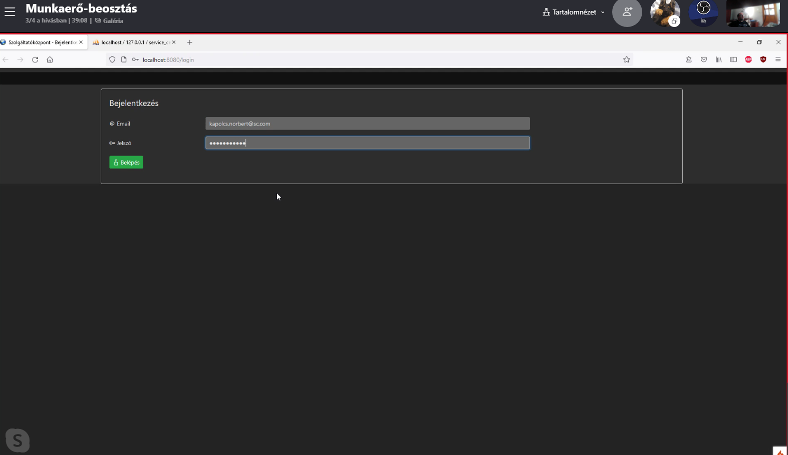
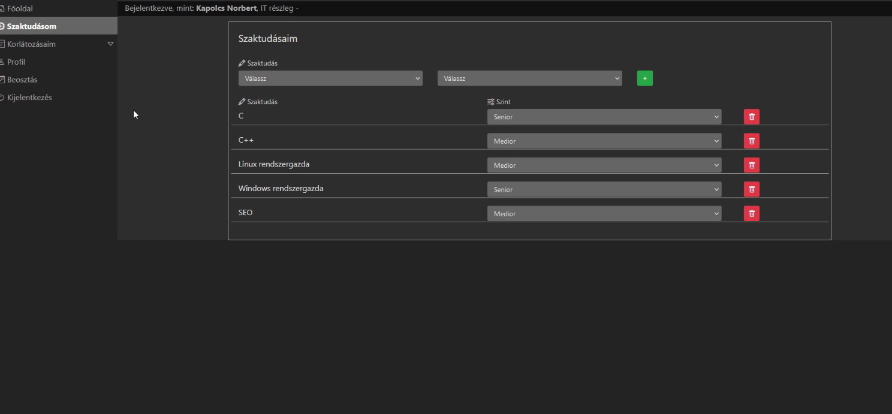
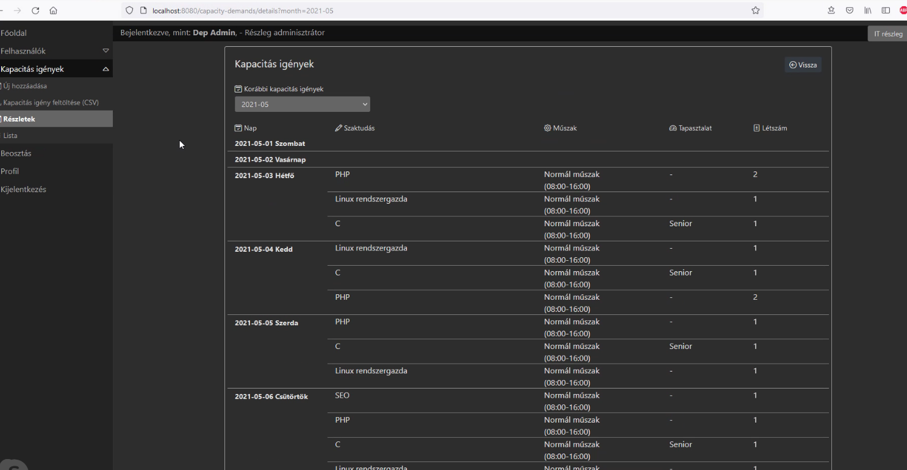
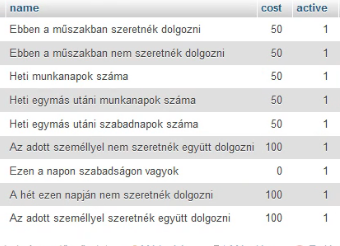
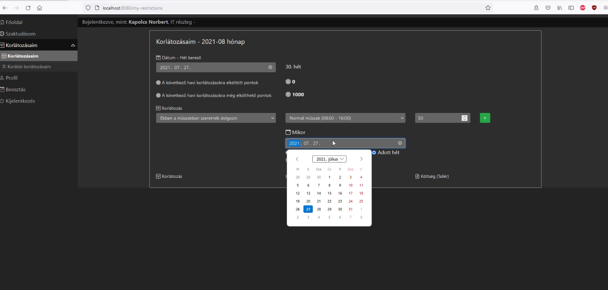
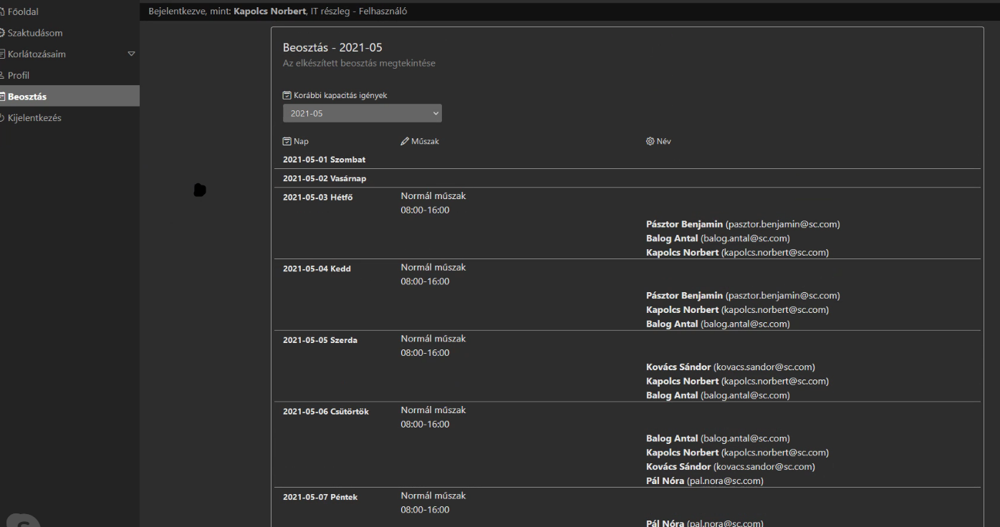

Ebben a projektben erőforrás-optimalizáló algoritmus kutatása, fejlesztése és az erre alapuló műszaktervező prototípus alkalmazás kidolgozása történt meg. A rendelkezésre álló erőforrás-állomány (ebben a prototípusban: munkaerő) újszerű optimalizációs algoritmussal kerül beosztásra, a kapacitásigényeket optimálisan lefedve, a munkavállalók feltételeit is megfelelő súlyozással figyelembe véve. A létrehozott prototípus egy webalkalmazás, amely PHP-ban van megírva, Apache webszerveren fut, MariaDB adatbázist használ és demója megtekinthető az https://muszakterv.larskol.hu webcímen. A demóalkalmazásba való bejelentkezéshez a lábjegyzetben megadott account-okat lehet használni.2 A megtekinthető demóban is szerepelnek demó adatok (munkavállaló, képességek, kapacitásigény, munkavállalói igények, …) és az optimalizáló is futtatható a demóban. Természetesen új adatokkal is feltölthető a rendszer, és újra tesztelhető a beosztáskészítés.
A forráskód megtekinthető a https://muszakterv.larskol.hu/forraskod/munkaero.zip webcímen, open source licenccel lett közzé téve.
Ez a valóságban egy Visual Studio Code PHP-projekt. A pontos verziók a forráskódban meg vannak adva.A webalkalmazásban először a felhasználók regisztrációját kell elvégezni. Néhány előre definiált felhasználót megadunk a mellékletben. Ezen az űrlapon egy beszúrás történik a Users táblába.
Ebben a táblában vannak tárolva a felhasználók adatai: email címe, jelszava, neve (külön tárolva a vezeték- és keresztnevet), pontjainak száma, jogosultsági szintje, melyik részleghez tartozik, a heti maximális munkaórák száma, éves fizetett szabadság. Egy felhasználónak egyféle jogosultsága lehet, és egy részleghez tartozhat.
A pontszámok majd a munkavállalók munkabeosztási kéréseinek, feltételeinek súlyozására lesznek használva. A részlegek azok, akik a munkaerőbeosztást fogják készíteni.
A munkavállalóknak lehetnek bizonyos ismereteik, képességeik, amelyek a munkaerő-beosztásnál majd számítanak. Ezeket (a képességek listáját, valamint azt, hogy milyen ismeretet birtokol melyik munkavállaló) is adatbázisban tárolja a webalkalmazás, és van ezeket kezelő űrlap is a webalkalmazásban. Nem csak a kompetencia meglétét, hanem annak szintjét is tárolja, munkavállalónként.
Egy adott részlegnek a beosztás tervezése előtt meg kell adnia a kapacitásigényét műszakokra lebontva, amiben nem csak létszámot, hanem kompetenciák mennyiségét is meg kell adni. Amikor üres tapasztalatot adunk meg, az csak a kompetenciát meg nem adó általános létszámot jelenti.
A beosztás készítésekor viszont nem csak a kapacitásigényeket veszi figyelembe az alkalmazás, hanem a munkavállalók egyénileg megadott feltételeit, igényeit (a felhasználó korlátozásai). Milyen feltételekről lehet szó? Ezek a munkavállalók által megadhatók a webalkalmazásban, de a lehetséges feltétel-típusok egy előre definiált, fixen felsorolt halmazból választhatók ki. Jelen prototipusban a következő feltétel-lehetőségek közül lehet választani. (A webalkalmazás később bővíthető még összetettebb feltételek megadásával.)
Amikor a munkavállalók a feltételeket megadják, a típustól függően paraméterezhetik dátumokkal (hét, nap) ill. egyéb beállításokkal. A munkavállalók a feltétel-megadáskor egy bónuszpont-értéket is megadnak, aminek az a jelentése, hogy a meglévő pontjai közül (amiket korábban kiérdemelt) mennyit hajlandó erre a feltételre rászánni.
A beosztáskezelő algoritmus mindezen inputokat figyelembe véve dolgozza ki a heti beosztást. A kapacitásigényeket mindenképpen kielégíti, ha egyetlen mód van rá, s azon felül a munkavállalói igényekre optimalizál, a kielégített igények pontjainak összegére. Az elkészült beosztást a megjelenítésen kívül táblázatba is lehet exportálni, más vállalatirányítási szoftverekhez való kapcsolás céljából. Az algoritmus működése backtrack-algoritmus, időkorlátozva, ahol a jelenlegi 2 perces időkorláttal 10 fős részleges optimális beosztása elkészíthető.
Az elkészült prototípus újdonsága az, hogy az optimalizáló algoritmus a munkavállalói igények logikailag összetett kombinációit is megengedi figyelembe venni (lásd a feltételek definiálási lehetőségeit). Ezenkívül a bónuszpontok »feltételek áraként« való felhasználása és az azok szerinti optimalizáció is újszerű. Természetesen az elkészült szoftver »open source« megvalósítása is újdonságerővel bír.
A fixált feltételek logikai összetettségén szükséges még javítani, legalább és/vagy feltételösszekötéseket megengedve, egyelőre csak és-kapcsolatok megengedettek (a felsorolás révén). Nyilván a próba-felhasználások révén további fejlesztési igények fognak keletkezni.
Szerzők: Kiss Attila Zoltán, Kolbe Tamás, Vályi Sándor
1Ezen
dokumentum elérhető a következő
webcímen:
https://www.larskol.hu/muszakterv/olvasdel.html
2
admin szerepkör: bejelentkezési email: "admin@servicecenter.com", jelszó: FDnajAhLhewmSQ8;
részleg-admin szerepkör: bejelentkezési email: "depadmin@servicecenter.com", jelszó: ;BbD@444m6
másik részleg-admin szerepkör: bejelentkezési email: "dep.admin@servicecenter.com", jelszó: 9Le$2$1*
a többi felhasználónál a jelszó: Jelszo12345